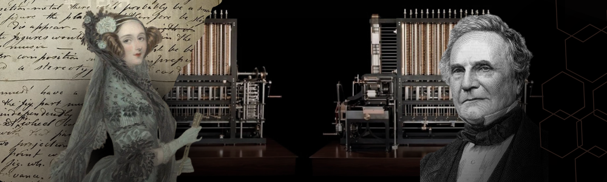
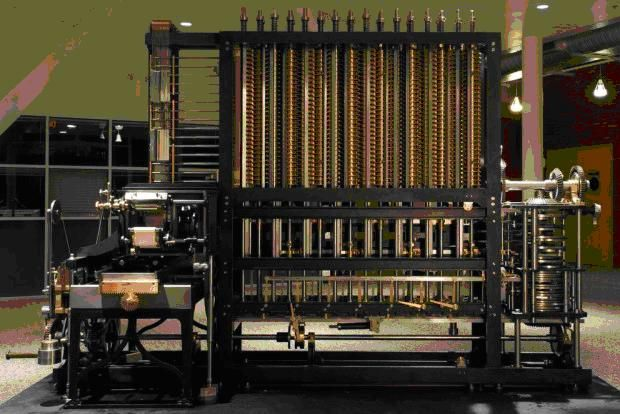
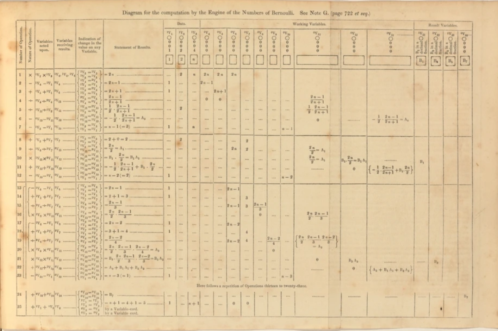
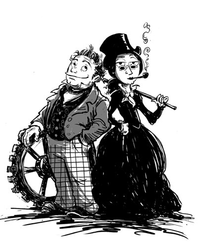

O Trabalho de Ada Lovelace e Charles Babbage: O Nascimento da Computação
Ada Lovelace trabalhou em estreita colaboração com Charles Babbage, considerado o "Pai dos Computadores", para explorar as possibilidades da Máquina Analítica, um projeto inovador para sua época. Esse trabalho resultou na criação do primeiro algoritmo projetado especificamente para uma máquina, consolidando Ada como a primeira programadora da história. Aqui estão mais detalhes sobre esse código e sua parceria com Babbage.
A Máquina Analítica: O Contexto do Projeto
A Máquina Analítica foi projetada para ser uma máquina de cálculo universal, capaz de realizar operações complexas automaticamente. Inspirado pelo tear de Jacquard, que usava cartões perfurados para criar padrões têxteis, Babbage imaginou um dispositivo mecânico que também pudesse ser programado por cartões perfurados para executar uma série de operações matemáticas.
- Moinho: Equivalente à CPU moderna, onde os cálculos eram realizados.
- Loja: Uma memória primitiva para armazenar dados intermediários.
- Cartões Perfurados: Utilizados para inserir instruções e dados.
- Impressora: Para a saída dos resultados.

Embora nunca tenha sido construída na época por limitações tecnológicas, o projeto era tão avançado que incorporava os princípios fundamentais dos computadores modernos.
O Algoritmo de Ada Lovelace

Em 1843, durante a tradução de um artigo de Luigi Menabrea sobre a Máquina Analítica, Ada adicionou suas próprias notas, que eram mais extensas e inovadoras do que o texto original. Nessas notas, Ada detalhou um algoritmo para calcular os números de Bernoulli, uma sequência matemática usada em várias áreas da ciência.
Como o Algoritmo Funcionava?
- Entrada de Dados: Usava cartões perfurados para fornecer à Máquina Analítica as instruções necessárias.
- Processamento Lógico: Ada elaborou passos detalhados para que a máquina processasse os cálculos, incluindo iterações (repetições de processos) e decisões condicionais.
- Saída de Resultados: Os resultados seriam automaticamente registrados em um dispositivo de saída, como uma impressora.
O algoritmo de Ada foi o primeiro a descrever a execução de instruções específicas por uma máquina, estabelecendo as bases para a lógica de programação.
Por Que Era Revolucionário?
- Uso de Loops: Ada introduziu a ideia de repetir operações automaticamente, um conceito essencial em qualquer linguagem de programação moderna.
- Estrutura Modular: As instruções podiam ser divididas em etapas reutilizáveis, antecipando a noção de subrotinas.
- Visão Ampla: Ada entendeu que a Máquina Analítica poderia ser programada para manipular símbolos de qualquer tipo, não apenas números. Ela previu que máquinas poderiam criar música, arte e realizar tarefas complexas.
A Parceria entre Ada e Babbage
Embora Babbage fosse o idealizador da Máquina Analítica, foi Ada quem compreendeu seu potencial mais amplo. Ele via o dispositivo principalmente como uma ferramenta para cálculos matemáticos. Ada, por outro lado, percebeu que a máquina poderia ser usada para processar informações de forma geral, antecipando o conceito de computadores como conhecemos hoje.
Como trabalharam juntos?
- Troca de Ideias: Babbage apresentava as características técnicas da máquina, enquanto Ada desenvolvia interpretações mais abrangentes, aplicando suas habilidades matemáticas e visionárias.
- Notas Expansivas: Ada usou as ideias de Babbage para criar notas detalhadas e compreensíveis para outros cientistas, facilitando a disseminação do projeto.
- Soluções Práticas: Ada identificava problemas potenciais na execução da Máquina Analítica e sugeria soluções, como métodos para evitar erros nos cartões perfurados.

Desafios na Colaboração:
- Diferenças de Foco: Babbage estava focado nos aspectos técnicos da construção da máquina, enquanto Ada estava mais interessada no impacto e nas aplicações práticas.
- Falta de Apoio Financeiro: Apesar dos esforços de ambos, a Máquina Analítica nunca foi construída devido à falta de financiamento e apoio político.
O Legado do Algoritmo de Ada
Embora a Máquina Analítica tenha permanecido no papel, o algoritmo de Ada foi redescoberto no século XX e é considerado um marco na história da computação. Sua abordagem lógica e estruturada influenciou o desenvolvimento de linguagens de programação modernas e inspirou cientistas como Alan Turing, que citou o trabalho de Ada em seus próprios estudos sobre inteligência artificial.
Principais Contribuições Técnicas:
- Primeiro Programa de Computador: Um conjunto de instruções detalhadas projetadas para serem executadas por uma máquina.
- Teoria da Computação Universal: Ada argumentou que máquinas poderiam processar mais do que números, um conceito central para os computadores modernos.
- Precursores de IDEs e Depuração: Ada discutiu a necessidade de verificar a precisão dos algoritmos, antecipando práticas modernas de desenvolvimento de software.